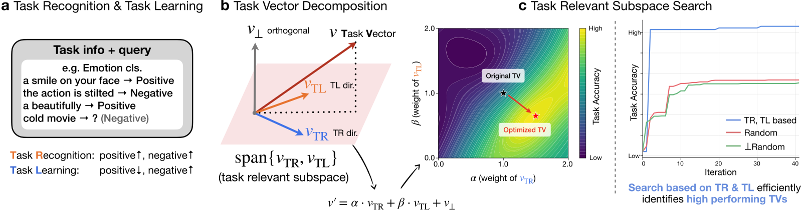
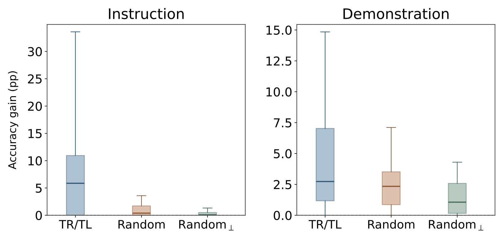
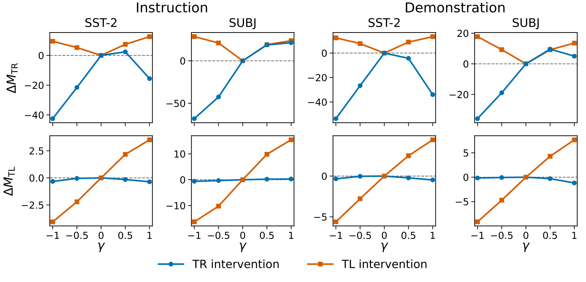

Task Vectors Can Be Linearly Decomposed into Interpretable and Controllable Components
1. 先记住什么
这篇论文把一个隐藏状态任务向量拆成“让模型输出候选标签”和“改变标签间偏好”等成分，再分别调整其权重。 它的主要价值是提供了一组有功能含义的搜索坐标：在作者的分类任务上，沿这些坐标调整向量，比直接使用原始向量更有效；对于从指令提取的向量，效果通常也优于使用随机坐标。现有证据尚不足以将两个成分视为独立的“任务识别模块”和“任务学习模块”。
- 对象：这里的 Task Vector（TV）是提示引起的激活差，模型参数冻结；不是模型合并中“微调权重减预训练权重”的 task vector。
- 方法：从候选标签的输出投影向量构造 TR/TL 方向，保留分解残差，用 Bayesian Optimization（BO）搜索两个系数。
- 证据：Table 2 的两个 Llama、四个任务、两种 TV 构造方式共 16 个配置，在独立测试样本上均有正增益；更广模型覆盖和随机方向比较主要来自优化集实验。
- 判断：我更愿意把它理解为受 ICL 机制研究启发的标签输出校准方法。它证明这种分解有用，但没有证明分解唯一、方向必然正交或行为效果独立可加。
作者来自 Keio University、RIKEN、Tohoku University。阅读版本为 arXiv:2610.41743v1，2026-10-30；本版本未标明会议录用信息。已阅读官方全文及附录 A–G，并用 PDF 第 12 页核对 Table 2；下文是原文分析，未运行作者实验。
2. 关键问题：知道该选哪个标签，不等于会输出那个标签
沿用论文的情感分类场景：给定一句影评，要求输出 positive 或 negative。为便于理解构造一个失败情形：模型已经更偏好 positive 而非 negative，但它对其他词的偏好更高，最终开始续写影评。此时问题可能是没有把输出限制到标签集合，而不是没有识别情感。
另一种情况是，模型已经稳定输出这两个标签，却总选错。两类问题需要不同干预；直接放大整个 TV 会同时改变多种成分，未必能针对具体错误起作用。
论文借用 ICL 中的两个概念，并给出较窄的操作定义（§3.2）：
| 成分 | 本文怎样操作化 | 对应上述案例 |
|---|---|---|
| TR，Task Recognition | 候选标签相对其他词的整体偏好 | 让输出进入 positive/negative 集合 |
| TL，Task Learning | 正确标签相对其他候选标签的偏好 | 在两个标签之间选对 |
| residual | 原始 TV 中未分配给前两项的剩余向量 | 保留尚未解释的信息，不把它当噪声丢弃 |
这里讨论的是标签输出偏好，范围小于“识别任务”和“从示例学到新映射”的完整含义。尤其对 TL 而言，改变标签判别分数，并不自动意味着学会了新的输入—标签规则。 作者在 Limitations 中也明确保留了这一边界。

原文 Figure 1。左侧解释功能区分，中间展示向量重组，右侧展示搜索思路。几何示意图中的“orthogonal”不能直接当成实际分解的普遍性质，见第 6 节。原图来源。

3. 关键方法：为单一 TV 构造两个有功能含义的调整方向
3.1 从同一条输入的有提示／无提示差分开始
仍以上面的影评为例。分别运行“任务指令 + 影评”和“只有影评”，取第 $l$ 层最后一个 token 的隐藏状态差。若采用 demonstration TV，则前者改为“带标签的示例 + 影评”，不加显式任务指令。对构造集的 $N$ 个 query 求平均：
对同一 query 的两种输入配对，是为了提取加入任务上下文后的平均变化；差分中仍可能包含任务之外的信息。论文用 256 个 query 构造 TV，示例模式每个标签给 4 条示例（§3.1、§4）。
3.2 从标签 unembedding 构造共同方向和对比方向
记 $W\in\mathbb R^{K\times d}$ 为候选标签对应的输出投影行，$K$ 是类别数，$d$ 是隐藏维度。作者先在标签坐标里指定两种变化，再映射回隐藏空间：
在二分类中，这就是 $w_++w_-$ 与 $w_+-w_-$：前者汇集两个标签的方向，后者突出它们的差异。这两个方向直接依据功能假设构造，没有训练 SAE，也没有先发现一组无监督语义特征。（Eq. 3–4）
接下来把原始 TV 投影到这两个轴上。二分类使用联合正则最小二乘，令 $D=[d_{\mathrm{TR}},d_{\mathrm{TL}}]$：
多分类的处理略有不同：TR 由平均 TV 投影得到；构造 TL 时，先将每个构造 query 的差分向量沿其真实标签 vs. 其他标签的方向投影，再取平均，得到共享的 TL 分量（Eq. 7–8、Appendix B）。因此，多分类构造阶段需要标签；部署时使用固定共享向量，无需知道测试 query 的正确标签。
为什么引入 $G$？ 输出层的标签方向未必适合直接解释中间层。作者用候选标签 softmax 的曲率衡量投影误差：
这一度量更重视对代理标签分布影响较大的误差；最终层直接用 $G=I$。这里的 $p$ 来自 TV 本身的直接读出，不代表完整 prompt 的真实预测分布。$G$ 也没有纳入后续 Transformer 层的 Jacobian，因此它提供的是与输出相关的投影度量，尚不能据此声称中间层与输出层的实际机制已经对齐。（Eq. 5–6、Appendix A、Limitations）
3.3 保留残差，只搜索方向比例
定义 $v_\perp=v_{\mathrm{TV}}-v_{\mathrm{TR}}-v_{\mathrm{TL}}$，再重组：
对新的影评，只输入 query，将 $\Delta h$ 加到选定层最后一个 token 的隐藏状态，再继续前向计算。$(\alpha,\beta)=(1,1)$ 恢复原始 TV 的方向；残差系数固定为 1，避免把未解释的信息直接丢掉。（Eq. 9–10）
归一化使干预长度固定为 $\lambda\|h\|_2$，论文取 $\lambda=1$。调整系数主要改变的是方向及成分占比，不会无限增大扰动长度。不过，归一化也使两个系数对最终扰动的影响相互耦合。
BO 在每一层独立搜索 $[0,2]^2$：12 个初始点包含原始 TV，随后 30 次搜索，共 42 次准确率评估。使用 Gaussian Process、Matérn-5/2 核和 Expected Improvement，在 $41\times41$ 网格上选下一次评估点。模型权重始终冻结，但仍需带标签的优化集和多次前向评估，并非零成本控制。（Appendix C）
4. 实验设置：哪些结果是在未见样本上得到的
实验首先要分清：在搜索用过的数据上找到更好系数，与把这组系数用于新样本，是两种不同的证据。 此外，即使新系数有用，也需要比较随机坐标，才能判断收益是否与 TR/TL 的功能设计有关。论文安排了以下三类比较：
| 实验 | 层怎样选 | 主要回答什么 |
|---|---|---|
| Figure 2 逐层优化 | 每层分别优化，在优化集报告增益 | 这组坐标能否在当前数据上修正 TV |
| Figure 4 随机方向对照 | 先按原始 TV 准确率选层，再固定层比较各方法 | 增益是否只是任意二维搜索都能获得 |
| Table 2 独立测试 | 在优化集联合选择层和系数，固定后测试 | 选出的配置是否迁移到未参与搜索的样本 |
Table 2 每个任务使用 500 条独立样本，仅报告两个 Llama。原始 TV 也在优化方法选出的同一层评估，因此该表比较的是同层重组的效果，未提供“原始 TV 独立挑选最佳层”这一完整基线。随机方向与 Qwen 的独立测试结果也未列入该表。（Appendix E）
模型、数据与仍待澄清的复现设置
主实验覆盖 Llama 3.2 1B、Llama 3.1 8B、Qwen 3.5 2B Base、Qwen 3.5 2B、Qwen 3.5 9B；任务为 SST-2、SUBJ、Financial PhraseBank（FP）、AG News，分别有 2、2、3、4 类。示例、TV 构造 query 和评估 query 不重叠。（§4）
正文及附录未充分交代 $D_{\mathrm{opt}}$ 的明确样本量、分解正则 $\varepsilon$ 数值、标签字符串到 token 行的选择规则，以及完整 prompt 模板 [?]。“256 个 TV 构造 query”也不能直接视为优化集大小。
5. 关键证据：有效，但不是任意任务上的独立功能开关
5.1 独立测试比优化集热图更有说服力
先固定在优化集选出的层和系数，再到未参与搜索的样本上测试：如果增益仍在，就说明调节效果能够迁移到新 query。Table 2 的 16 个配置均有正增益。以下选取代表性结果，准确率单位为 %，增益单位为百分点：
| 模型 | 任务 / TV 来源 | 所选层 | 原始 TV | 优化 TV | 增益 |
|---|---|---|---|---|---|
| Llama 3.2 1B | SST-2 / 指令 | 16 | 11.2 | 79.6 | +68.4 |
| Llama 3.2 1B | SST-2 / 示例 | 13 | 80.4 | 82.8 | +2.4 |
| Llama 3.1 8B | SST-2 / 指令 | 32 | 0.4 | 84.2 | +83.8 |
| Llama 3.1 8B | SST-2 / 示例 | 32 | 69.8 | 85.0 | +15.2 |
| Llama 3.1 8B | FP / 示例 | 25 | 61.0 | 62.8 | +1.8 |
| Llama 3.1 8B | AG News / 指令 | 24 | 14.8 | 65.8 | +51.0 |
先比较表中同为 SST-2 的结果：1B 模型的指令 TV 从 11.2% 升到 79.6%，示例 TV 则从 80.4% 升到 82.8%；8B 也表现出指令 TV 增益更大的差别。调节确实能修复原始 TV 的一部分错误，但表中最大的改善出现在原始输出已经很差的指令 TV 上。 结合前面的标签集合例子，这些增益仍需区分“让模型正确输出已有判断”和“改善标签间判断”，不能全部算作获得了新任务知识。FP 示例 TV 的增益只有 1.8 个百分点；表中没有置信区间或多次完整实验的方差，较小增益的稳定性仍需检验。
Figure 2 的优化集热图只能提供较弱的支持：BO 初始候选包含原始 TV，又从已评估点中选最高准确率，在相同数据、确定性评估下，最优值本就不会更低。独立测试中的增益不由这条搜索规则直接保证；接下来还要检验，是否任意两条搜索轴都能带来同样收益。
5.2 相同预算下，TR/TL 坐标比随机坐标多提供了什么？
这里需要排除一个简单解释：只要允许二维搜索，随便选两个方向也能修好原始 TV。作者因此固定同一个 TV，用相同 BO 预算比较 TR/TL、普通随机轴，以及避开 TR/TL 子空间的随机轴。（§4.3、Appendix D）

原文 Figure 4。左侧指令 TV 的 TR/TL 优势更明显；右侧示例 TV 中，普通随机搜索也有收益，与 TR/TL 的差距缩小。此处不从箱线图估算精确均值，也不把箱体跨度当作置信区间。原图来源。

指令 TV 上的优势更明显，说明有功能含义的坐标并非可以被任意随机坐标等价替换；示例 TV 上普通随机搜索也有收益，TR/TL 的额外价值较小。 这一差别限定了结构设计的贡献，尚不能证明它是唯一或最优分解。示例 TV 的 Random 优于 Random$_\perp$，与“随机轴偶然包含有用的 TR/TL 成分”相容；作者没有把这一解释进一步验证成确定机制。
随机方向对照如何保持可比
Random 用两个高斯随机轴分解同一个 TV；Random$_\perp$ 将随机轴限制在 TR/TL 子空间的正交补。每种方法均保留各自残差、恢复原始 TV 点、使用相同 BO 预算及归一化；随机轴采样运行 5 个种子。Figure 4 先按原始 TV 准确率选层，再固定层比较各方法，报告的是优化集上的搜索增益。（§4.3、Appendix D）
5.3 两个分量改变了什么：标签判别有区别，集合偏好仍会交叉变化
坐标搜索有用，还不能说明 TR 与 TL 确实承担了命名所暗示的不同功能。为此，作者在 SST-2、SUBJ 两个二分类任务中分别注入 TR 或 TL：若功能有所区分，两种干预对“进入标签集合”和“在标签内选对”的影响就应不同。用来观察这两种变化的指标为（§4.2，Eq. 11–13）：
前者是候选标签集合相对词表其余部分的 log odds；后者是正确标签相对错误标签的 logit margin。作者分别扫描干预强度 $\gamma\in\{-1,-0.5,0,0.5,1\}$，观察这两个指标怎样响应。

原文 Figure 3。先看下排：TR 蓝线接近零，TL 橙线随强度变化，支持标签判别功能的区分。再看上排：TL 同时影响候选集合偏好，TR 的响应也有非单调现象。原图来源。

结果中，TR 对标签判别指标的影响接近零，TL 则能改变它；这为两种分量的功能区分提供了比总体准确率更直接的支持。不过，TL 也会改变候选集合偏好，TR 的响应还有非单调现象。因此，目前更稳妥的结论是：两个分量对所选输出指标的影响不同，还不能据此认为它们是互不影响的功能开关。
TL 改变 $M_{\mathrm{TR}}$，不一定意味着内部两个过程相互依赖，因为提升一个候选标签的 logit 就能改变候选集合的 log-sum-exp。同样，两条曲线不同也不足以证明内部计算机制彼此独立。
5.4 调节也有失效的任务
失败例进一步限定了方法的适用范围：在日语金融语境中的隐含承诺／拒绝识别 JF-ICR 上，Llama 3.2 1B 的后层有改善，Llama 3.1 8B 则几乎没有。作者推测后者可能缺少可靠的原始 TV，但未用实验定位原因。这至少表明，二维调节未必能补足任务所需的表征。（§4.4，Figure 5）
6. 我的判断：最值得追问的三个问题
6.1 收益中有多少是“回到标签集合”，有多少是真正判对了？
观察：部分指令 TV 基线接近零；Figure 6 的高准确率区域还允许很小的 TL 系数。作者的解释是，query 隐藏状态或残差中可能已有标签判别信息，此时增加候选标签的整体竞争力比进一步扩大标签间距更有用。（§5、Appendix G）
我认为下一步最关键的对照是：在同一独立测试集上，同时报告全词表预测准确率、预测落入候选集合的比例、仅在候选标签内取 argmax 的准确率，并比较直接 logit 校准或受限解码。如果原始 TV 在标签内已经判得很好，主要收益就可能是输出格式／标签集合校准；若标签内准确率仍明显提升，才更支持判别能力也被改善。这个区分会直接改变我们如何评价“Task Learning”。
6.2 向量恒等分解、方向正交、效果独立是三件事
论文定义残差后，$v_{\mathrm{TV}}=v_{\mathrm{TR}}+v_{\mathrm{TL}}+v_\perp$ 必然成立；它本身不构成功能分解的证据。更具体地，§5 使用了 TR/TL 向量正交的说法，但按 Eq. 4 的二分类构造，可以直接推得：
这是笔记者的代数核查：除非满足等范数等额外条件，标签空间中正交的共同／对比系数在映射后未必仍然正交；正则投影的残差也不能无条件视为欧氏正交残差。方法本身可以在不满足这些性质时运行，但对其几何性质的描述需要更准确。
即便方向在几何上正交，后续网络和归一化仍可能使干预效果发生交互。Appendix F 只给出围绕 $(1,1)$ 的局部 Taylor 条件：高阶项足够小，输出 log odds 才近似相加；作者明确说明，尚未验证整个搜索区间是否满足这一条件。若要检验“独立可控”，还需测量二维干预响应中的交互项，仅有两条单轴曲线并不足够。
6.3 投影度量和“任务识别”的目标没有完全对齐
由 Eq. 6 可得 $H\mathbf1=0$，其中 $H=\operatorname{diag}(p)-pp^\top$。这意味着：只在候选标签内部定义的 softmax 曲率，看不到所有候选 logit 同时加上同一个常数的变化；而相对非标签词提高候选集合的概率质量，恰恰是本文 TR 想衡量的行为。
这也是基于公式的判断，而非作者报告的消融结果。实际隐藏空间 TR 方向不一定只产生等幅 logit 平移，$\varepsilon I$ 也保留了其他度量信息，所以不能由此断言方法失效。但它提示：当前 $G$ 与 $M_{\mathrm{TR}}$ 的目标并不完全一致。值得比较包含“非标签集合”概率质量的度量、简单欧氏投影和当前度量，确定究竟是哪个部分提供了控制收益。
7. 连接与发现
- Persona_Vectors-Monitoring_Controlling_Character_Traits_LLMs：同样面对“粗粒度行为向量里混合了什么”的问题。Persona Vector 笔记讨论借助 SAE 特征拆分；本文直接用标签共同／对比结构定义坐标，先验更强、搜索维度更低，适用对象也更受限。
- Sparse-Autoencoders-Reveal-Interpretable-and-Steerable-Features-in-VLA-Models-稀疏特征与因果操控：两者都需要区分“存在可读的方向”“干预能改变行为”和“已分离独立机制”。尤其不要把方向投影、成分消融和独立控制默认视作同一操作。
阅读范围与来源：arXiv 元数据、正文与附录、PDF。图 1、3、4 从官方 v1 SVG 等比例栅格化，数值未重绘；Table 2 数字已与 PDF 核对。以上未包含代码运行或实验复现。
#Research #Paper #Interpretability #In_Context_Learning #Activation_Steering
📝 修订记录
- 2026-11-04：重组独立测试、随机方向与成分干预的证据顺序，补足各项比较的目的与结果解释；折叠模型设置和随机对照细节，保留小增益不确定性与失败案例。本轮基于既有笔记整理表达，未重新全文核验原论文。